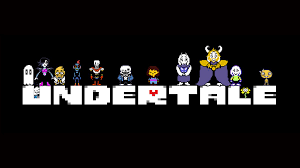
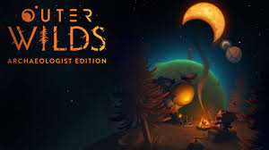
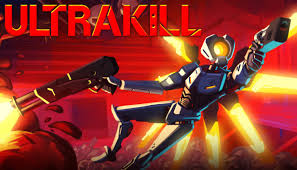
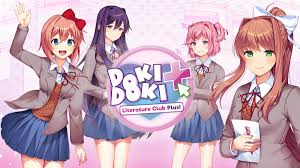

Jogo 1: UNDERTALE

Undertale é um RPG eletrônico criado pelo desenvolvedor independente norte-americano Toby Fox. Nele, o jogador pode controlar uma criança humana que caiu em uma caverna, uma região grande e isolada sob a superfície da Terra, separada por uma barreira mágica
Preço: R$ 20,00
PROMOÇÃO: R$ 5,00
Saiba mais na WIKI no jogo
Jogo 1: OUTER WILDS

Outer Wilds é um jogo eletrônico independente de ação-aventura e exploração em mundo aberto. No jogo, o protagonista se encontra em um sistema solar com apenas 22 minutos para explorá-lo antes que o sol local se torne uma supernova e o mate; o jogador repete continuamente esse ciclo de 22 minutos aprendendo detalhes que podem ajudar a alterar o resultado em jogadas posteriores
Preço: R$ 48,00
PROMOÇÃO: R$ 32,00
Saiba mais na WIKI no jogo
Jogo 3: ULTRAKILL

Jogo rápido, desafiante e divertido, feito para fãs desse tipo de FPS. O sistema de ranqueamento e o incentivo para variar e fazer combos e jogadas rápidas faz com que nenhuma jogatina realmente seja a mesma
Preço: R$ 50,00
PROMOÇÃO: R$ 25,00
Saiba mais na WIKI no jogo
Jogo 4: DOKI DOKI LITERATURE CLUB!

A história segue um estudante que, a contragosto, entra para o clube de literatura de sua escola a pedido de sua amiga Sayori e tem a opção de desenvolver um romance com ela, Yuri ou Natsuki. A presidente do clube, Monika, também desempenha um papel importante na trama.
Preço: R$ 40,00
PROMOÇÃO: R$ 28,00
Saiba mais na WIKI no jogo